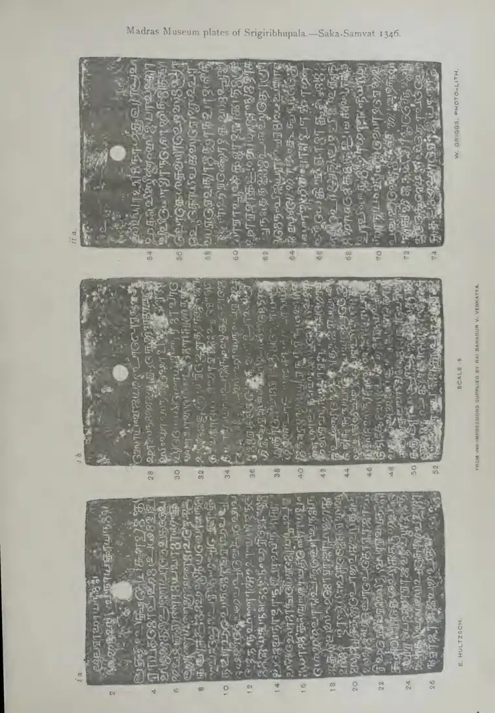

Madras Museum plates of Śrîgiribhûpâla ; Śaka-Samvat 1346
MADRAS MUSEUM PLATES OF SRIGIRIBHUPALA;
SAKA-SAMVAT 1346.
By M. NARAYANASVAMI AYYAR, B.A., B.L., HIGH COURT VAKIL, MADRAS.
The finding-place of these plates is not known. But from Mr. Sewell's description of them3 it appears that they were preserved in the office of the Head Assistant Collector of North Arcot.
1 These taxes (ll. 122-143) are left untranslated.
2 Prabhava is the name of the cyclic year immediately following Kshaya, in which the grant was made sec ll. 24 and 47 of the text.
3 Lists of Antiquities, Vol. II. p. 12.
Hence it is likely that they were found in the North Arcot district. They are now preserved in the Madras Museum, and I edit the inscription on them from two ink-impressions kindly furnished to me by Mr. Edgar Thurston, Superintendent of the Government Central Museum, Madras, with the permission of Government.
The copper-plates are three in number. The inscription is engraved on both sides of each of them. The second and third plates are marked at the left top corner of their first sides with the Tamiñ numerals 2 and 3 respectively. The first two plates measure 9" by 4½", while the dimensions of the third and last plate are 8½" by 4½". The ring, if any, on which the plates were strung, is lost; and they are now kept together by a string passed through the ring-hole, about ½" in diameter, bored on the top of each plate.
The alphabet in which the inscription is engraved is Grantha; but in the following cases Tamiñ letters have been used:—ñ, g, d and ñá of the word Vēñyadānātha in line 102; tiru of Tiruvēñkaṭa in l. 108; Pillai in l. 112; peru of Perumikai in ll. 115 and 121 f.; nearly the whole of the phrase Kuppan=ulliṭṭārukku in l. 123; and r of Nāyinār in l. 130. The colophon Śrī-Triyambaka is written in Kannada characters. A few peculiarities of the alphabet are worth noting. The secondary á-symbol is added near the bottom of the consonant in a few cases; compare já and ná in the word prajānām in l. 34, nā of nithasya in l. 40, nāni in l. 44, and samastānām in l. 46. The guttural ñ of Šārñginōh in l. 65 resembles ndya. The subscript consonant in conjunct letters is in some cases added by the side of the first instead of at the bottom as in modern Grantha; compare bdē in Šakasy=ábdē in l. 56, bdu of pratyabda in ll. 67 and 81, ñgi of Šārñginōh in l. 65, and stá of samastānim in l. 46. Final m is in some cases not distinguished from ma; but, in order not to swell the footnotes unnecessarily, the distinction has been introduced into the text; compare e.g. m in Lakshmím (l. 3), sambhátam (l. 5), vaibhavam (l. 5 f.) and bhúshaṇam (l. 7) with m in °paham (l. 4), sampa° (l. 19), °ratím (l. 38) and grámam (l. 51). The group rṇpa is written somewhat like ṇtha; compare sampūrnṇu in l. 59 and vistirṇṇam in l. 54. The letter di of Divákara in l. 113 resembles the Tamiñ vowel i of the 12th century A.D. The conjunct rgga is also peculiarly shaped; see Bhárggava in ll. 108, 112 and 124. The difference between the vowel ri and the secondary consonant r is marked by making the r-symbol end in a loop in the former case; compare príthívím in l. 37, nívřid in l. 49, Bhrígu in l. 57, vrittair in l. 72, and vyávrittair in l. 72 f. with sampráptē in l. 56 f., grámam in line 62 f., and pratyěkam in l. 76, etc. As regards orthography, it may be noted that the hard dental t is used for the soft d in Patma° (l. 17), vidvatbhir (l. 45), Chitambara° (l. 77 f.), Utbáhu° (l. 120) and bhavatbhiñ (l. 146). The form ranna is used for ratna in l. 27, and the lingual l for the dental l in bhúpáló in the same line. Both these forms are probably due to the influence of Kanarese, which may also account for the change of d into l in Paluvút-kóṭta (l. 48). Bá is substituted for vá in the word Bádhála in l. 120. As a rule n is doubled when it occurs in conjunction with d; see Góvinnda in . 89, Utbáhusunndura in l. 120 f., and Skannda in l. 126.
The language of the inscription is Sanskrit. Nearly one-half is in verse, and the other half, enumerating the donees and the shares which each of them received, is in prose. In only one place a Tamiñ phrase, Kuppan=ulliṭṭārukku, occurs (l. 123). The inscription uses abbreviated forms for the gótras and sútras of the donees, except in the case of the chief person, Sampatkumára-paṇṭita (ll. 133-135).
The record begins by tracing the first Vijayanagara dynasty from the Moon, in whose lineage Yadu is said to have been born (v. 5). In the race of Yadu was born Sangama (I.), whose son was Bukka (I.) (v. 6). His son was Harihara (II.) (v. 7). His son was Dēvaráya (I.), and his son Vijayabhúpati (v. 8) or Vijayabhúpála1 (v. 9), who had two sons:
1 He is also called Vijayabhúbhuj (v. 16), Vijayaráj (v. 21) and Vijayaráya (v. 24).
Dêvarâjèndra (v. 10) or Dêvarâya (II.) (v. 11) and Śrîgirîndra (v. 10), Śrîgiriśvara (v. 12) or Śrîgiribhûpâla (v. 13). The former, being the elder, succeeded to the throne (v. 11), while the second went over to Maratakapuri and was ruling the country of which it was the capital (v. 12). He made the subjoined grant of land to Sampatkumâra-paṇdita1 and his relatives and other learned men with him, on a Friday coupled with the Rêvati nakshatra, on the Utthâna-dvâdaśi tithi, in the cyclic year Krôdhin corresponding to the Śaka year 1348. The Śaka date is expressed by the chronogram tattvâlôka (v. 19), the same as that of the Satyamaṅgalam plates of Dêvarâya II.,2 which were issued in the month of Âshâdha. Our record belongs to the month of Kârttika; for the Utthâna-dvâdaśi is the twelfth tithi in the bright half of the month of Kârttika, when Vishṇu is said to rise from his four months' sleep. It is otherwise called Prabôdhanî. Prof. Kielhorn kindly contributes the following remarks:—
“On the utthâna-dvâdaśi-tithi see Ind. Ant. Vol. XXVI. p. 185. For this tithi of Śaka-saṅvat 1346 expired, which was the year Krôdhin, the date regularly corresponds to Friday, the 3rd November A.D. 1424, when the 12th tithi of the bright half commenced 1 h. 8 m., and the nakshatra was Rêvati from 0 h. 39 m., after mean sunrise.”3
The chief donee, Sampatkumâra-paṇdita, is described as a very learned medical man, whose father Gôvinda-paṇdita (v. 14) was also well versed in the Âyurvêda and in the Vêdângas. The village Nipatatâka (v. 17), the gift of which is recorded by the present inscription, had been given away to the same donee by (the donor's father) Vijayabhûbhuj (v. 16). So we may infer that by some means or other it had lapsed in the interval. It is said to have been watered by the Nâgakulyâ channel (v. 18), a branch of the Kâvêripâka channel (v. 17), and was situated in Kalavâ-nîvṛit4 (Kalavai-paṛṭu in Tami), a division of Paṭuvût-kôtta (Paṭuvûr-kôttam). When the village was granted, its name was altered into Vijayarâyapura (v. 24) or Vijayarâtpura (v. 21), evidently in honour of its original donor Vijayarâya.
As regards the name Śrîgiribhûpâla, a word of explanation is necessary. Śrîgiri is another form of Śrîparvata in the Kurnool district. The god of the temple at that place is called Mallikârjuna, and hence it is not impossible that the prince was actually named Mallikârjuna after the god, and that this name was changed by the poet into its equivalent Śrîgiribhûpâla. The manner in which the present inscription speaks of him, makes it possible that Śrîgiribhûpâla was the same person as the Pratâpadêvarâya who is spoken of with respect in the Satyamaṅgalam plates of Dêvarâya II. as the younger brother of the king. For verse 10 states that Vijayabhûpâla had only two sons, Dêvarâjèndra and Śrîgirindra. If the latter is not the same person as Pratâpadêvarâya, he must be another brother of Dêvarâya II., not hitherto known. Śrîgiribhûpâla (alias Mallikârjuna?) is of course distinct from Mallikârjuna alias Immañi-Dêvarâya, who was the son of Dêvarâya II.,5 and whose dates range from Śaka 13706 to Śaka 1387.7
As regards the places mentioned in this grant, Maratakapuri is already known to us from the expression Maratakanagara-prânta occurring in the Satyamaṅgalam plates of Dêvarâya II., and Rai Bahadur Venkayya has suggested that it may be identical with Viriñchipuram in
1 See vv. 16, 21 and l. 135.—[Sampatkumâra is a Sanskrit rendering of the Tami Šelvrpillai, the name of the god at Mêlukôte in the Mysore State. It seems therefore possible that the chief donee belonged originally to the Kanarese country, and his father's native place, Rambhâmayûranagarî (v. 13), may have to be looked for in the same country. One of the minor donees, Hampaṇa-bhatta (l. 93), was evidently called after the Pampâpati temple at Vijayanagara.—V. V.]
2 Above, Vol. III. p. 35.
3 “For another date of exactly the same tithi, but with a wrong week-day, see Southern List, No. 488.”
4 Compare above, p. 300, note 9.
5 Compare Appendix II. p. 15, No. 21.
6 Ep. Carn. Vol. III. Seringapatam tâluka, No. 11.
7 Ind. Ant. Vol. XXI. p. 321 f.
the North Arcot district.1 Kalavâ-nivrit is derived from the town of Kalavai in the Arcot tâluka of the North Arcot district.2 For Pađuvûr-kôṭṭam see above, Vol. IV. pp. 82, 138, 180, 271; Vol. V. p. 50; Vol. VII. p. 192; and South-Ind. Inscr. Vol. III. p. 89. The name of the village granted, Nipatatâka, is evidently a Sanskrit translation of a Tamil name which should be Kađappêri.3 As a matter of fact there is at present a village called Kađappêri in the Wâlâjâpêt tâluka of the North Arcot district, which is situated five miles east of the anicut or masonry dam across the Pâlâr river, and two miles south-west of Kâvêripâk itself. It is situated on the Kâvêrippâkkam channel which at present takes off from the Pâlâr river on the southern side of the anicut, and is irrigated by a branch from it. It thus retains its ancient name, notwithstanding the attempt of a king to impose on it a new one.
TEXT.4
First Plate; First Side.- 1 भूवराहाय नमः ।
- 2 शुभमस्तु । विनायकाय नमः ।
- 3 लक्ष्मीम् पक्ष्मक्यत्वाद्यमन्त-
- 4 रायतमोपहम् । प्रथमद्दन्द-
- 5 सम्भूतम् प्रणयाद्दैतवै-
- 6 भवम् । [१*] करुणामयवामांगं क-
- 7 खाणगुणभूषणम् । वन्दे चन्द-
- 8 कलाकल्यम् महस्तितयलोचनम् । [२*]
- 9 भुवः प्रेमपरिषुंगपुक्कांकि-
- 10 तवाहवे । नमो वराहवपु-
- 11 षे श्रीवैभवपुषे त्विषे । [३*] व-
- 12 न्देनन्तफणाभूषां स्यन्दन-
- 13 म्रोरुधन्वनः । मेदिनीं हरिदोस्तम्-
- 14 बमेघनादानुलासिनीम् । [४*] आ-
- 15 सीत् सोमान्वये रम्ये यदुः पर-
- 16 मधार्मिकः । अंशावतीर्णे यद्दं-
- 17 शे भगवान् पत्न्यलोचनः । [५*] त-
- 18 त्कुले संगमो राजा सम्भूत्
- 19 सम्पदान्निधिः । विक्रमैकरसस्त-
1 Above, Vol. III. Additions and Corrections, p. vii.
2 Compare above, Vol. IV. p. 271.
Nipa is the name of a tree, Nauclea Cadamba.— [An inscription of Vîra-Kampana-Udaiyar at Kâvêripâk'kam registers the sale of the village of Kađappêri in Kalavai-parku, a subdivision of Pađuvûr-kôṭṭam; see the Annual Report on Epigraphy for 1905-06, p. 34, No. 386 of 1905.—V.V.]
4 From ink-impressions.
5 The é of mnd is at the end of l.12.
6 Read °लम्भ°.
7 Read पक्ष°.
20 स्य वुक्कभूपोभवत् सुतः । [६*] श्यो-
21 सर्वमंगलोपेतो राजा ह-
22 रिहरेश्वरः । सिद्धसारस्वतस्मा-
23 क्षालोकेशस्तत्तनूभवः । [७*]
24 'देवरायमहाराजस्तस्मादजनि
25 पार्थिवः । यस्य पुत्रोभवद्धीमा-
26 न् राजा विजयभूपतिः । [८*]
First Plate; Second Side.
27 सोयं विजयभूपाक्रो2 रत्रसिं-
28 हासनम् भजन् । कटके भूमृताञ्चक्रे
29 सिंहासनजुषो द्विषः । [२*] श्रौदा-
30 र्यधैर्यशौर्याणामावा-
31 सौ3 वासवोपमौ । अभूतान्दे-
32 वराजेन्द्रश्रीगिरीन्द्रौ तदात्मजौ । [१०*]
33 देवरायो महाराजः पुरोजन्म-
34 तया तयोः । प्रजानां सुक्वतोन्मे-
35 षैः प्राप सिंहासनं परम् । [११*] पु-
36 रीम् मरतकाख्यान्तु सम्प्राप्य श्री-
37 गिरीश्वरः । शशास ष्टथिवीमेनां
38 सुत्रामेवामरावतीम् । [१२*] सोयं श्री-
39 गिरिभूपालोः4 कार्श्यपान्वयज-
40 न्मनः । रम्भामयूरनगरीनाथस्य गु-
41 णशालिनः । [१३*] सर्व्वायु[र्विद]वेदां-
42 गसरस्वत्पारदृश्वनः । गोवि-
43 न्दपण्डिते[न्द्र]स्य तनूजाय यशस्वि-
44 ने । [१४*] 'नानान्वयायैर्विप्रेन्द्रै-
45 'र्विद्वत्भिर्व[ा]न्धवैरपि' । समेता-
46 य समस्तानाम् भिषजामययायि-
47 ने । [१५*] दत्तम्8 सम्पत्कुमाराय पूर्व्व
1 The d of d̄d̄ is at the end of l. 23.
2 Read °भूपाली रत्र°.
2 The d̄ of sau is at the end of l. 30.
4 Read °भूपालः काश्यपान्वय°. 5 Read नानान्वव.यै°.
6 Read °र्विद्वत्भि°.
7 The d̄ of rb̄d̄ seems to have been added subsequently.
8 Read दत्तं.
48 विजयभुभुजा । पकुवूत्कोट-
49 तिलकं कलषानीषृदुत्तमम् । [१६*] कावेरिपा-
50 ककुल्यांशप्राप्तजीवनवर्द्धितम् ।
51 या[म]म्1 नीपतटाकाव्यम्2 कांचणी-
52 यगुणान्वितम् । [१७*] आप्ताव्यमान-
Second Plate ; First Side.
53 सस्याव्यम्3 नागकुल्याप्रवा-
54 हतः । विस्तोर्णं सीमया बह्वग
55 विविधोद्यानशोभितम् । [१८*] तत्वा-
56 लोके शकस्याद्दे सम्प्रा-
57 मे क्रोधिवत्सरे । भृगुवा-
58 सररेवत्यामुत्थानद्दादशीति-
59 यौ । [१९*] हिरण्योदकसम्पूर्ण-
60 धारापूर्वकमादरात् । तमप्र-
61 हारमाकल्पं सर्वमाश्रमदात्
62 पुनः । [२०*] ततस्मम्पत्सुतो या-
63 ममेनं विजयरा[ट]पुरम् । ष[ट]पञ्चाग्र-
64 त्संख्यभागं क्लवा तच्चै-4
65 शशाङ्गिणोः । [२१*] द्दौ5 भागौ6
66 विदधे किञ्च कामाचीधर्मम-
67 ण्डपे । प्रत्यन्दन्द्विजभुक्त्यर्थ-
68 म् भागमेकमकल्पयत् । [२२*] स्वार्थ-
69 न्द्वाविंशतिम् 6भागान्विधाया-
70 श्रानयं सुधीः । सोदरेभ्यवा-7
71 ववन्धुभ्यो म[नी]षिभ्यश्च दत्तवा-
72 न् [२३*] अभिजनविद्यावृत्तैर्व्या-
73 8वृत्तैरेष भूषितो विप्रैः ।
74 आकल्पमग्रहारो जीयान्ना(म्)-
1 Read षामं.
2 Read °काखं.
3 Read °सस्याद्धं.
4 Read तप्रश्.
5 The secondary ८ of an is omitted in the original.
6 Cancel the ७ after भागो.
7 Read सोदरेभ्यस्त्ववन्धुभ्यो.
8 The first three letters of this line are engraved upon an crasure.
Second Plate; Second Side.
75 न्ना1 तु विजयरायपुरम् । [२४*] अतः
76 परम् प्रत्येकम् भागनिर्वय2 उच्च-
77 ते । ग्रामदैवतस्य श्रीचितम्ब-3
78 रनाथस्य शिवस्यैको भागः ।
79 गोविन्दनाथाख्यस्य विष्णोरे-
80 को भागः । कामाचीधर्ममण्ड-
81 पे प्रत्यन्दग्निजभुक्त्यर्थम् भा-
82 गम् ।१। काश्य आप यजुः उमाप-
83 तिभद्दस्य भागम् ।१। काश्य आप य-
84 जुः चन्द्रभद्दस्य भागम् ।०॥०। काश्य
85 आप यजुः पुण्डरीकाच्चभद्द-
86 स्य भागम् ।१। काश्य आप यजुः[]4 दे-
87 वराजभद्दस्य भागम् ।१। काश्य आ-
88 प यजुः लक्ष्मणभद्दस्य भागम् ।
89 काश्य आप यजुः 5गोविन्दभद्दस्य
90 भागम् ।०॥०। काश्य आप यजुः भास्कर-
91 भद्दस्य भागम् ।०॥०। भारद्वा आप
92 त्रिवेदिवामनभद्दस्य भागम् ।१। आ-
93 त्रेय आश्वल ऋक् हम्पणभद्दस्य
94 भागम् ।१। आत्रेय आश्वल ऋक् विज-
95 येश्वरभद्दस्य भागम् ।१। कौशिक6
96 आप यजुः मार्त्ताण्डभद्दस्य भाग-
97 म् ।१। 7षठम[षं] बो शौरिराजभद्दस्य
98 भागम् ।०॥०। वाधूल आप यजुः लक्ष्म-
99 णभद्दस्य भागम् ।०॥०। काश्य आप
Third Plate; First Side.
100 यजुः भास्करभद्दस्य भागम् ।२। क[1*]श्य
101 आप यजुः 8एकाम्ह्रभद्दस्य भागम् ।०॥०।
1 Corrected from ना.
2 Read 2निर्णय.
3 Read शौष्टिदम्ब०.
4 The visarga seems to be an interlineation.
5 Read गोविन्द०.
6 The secondary ८ of au is omitted in the original.
7 Read शड०.
8 Read एकामृ०.
Plate 1 is bound after this page.
102 भारद्वाज आप यजुः वेङ्गडनाथ-1
103 दीक्षितस्य भागम् ।०॥०। वाधूल आप
104 यजुः समरपुंगवभट्टस्य भागम् ।०॥०।
105 वत्स आप यजुः यज्ञनारायणभट्ट-
106 स्य भागम् ।०॥०। भारद्वाज आप यजुः का-
107 क्वहस्तिनाथपावनाशयोर्भागम्2 ।१।
108 भार्गव आप यजुः तिरुवेंकटभट्टस्य3
109 भागम् ।१। वासिष्ठ बोधा ऋक् वरद-
110 राजभट्टस्य भागम् ।१। भारद्वाज आ-
111 प यजुः पापनाशस्य भागम् ।०॥०।
112 भार्गव आप यजुः आण्टान्4 पिक्कै
113 भागम् ।०॥०। बोधा यजुः दिवाकर-
114 न् पुत्रन् चन्द्रभट्टस्य भ[ा*]गम् ।०॥०। भार्ग-
115 व आप यजुः पेरुंकै5 देवरा-
116 जस्य भागम् ।०।०। भारद्वाज आप यजुः
117 श्रीरुद्रभट्टस्य भागम् ।०।०। काश्यप आ-
118 प यजुः श्रीरंगनाथस्य भागम् ।०।०।
119 वत्स आप यजुः त्रियम्बकस्य6 भागम् [।*]०॥०।
120 बाधूल7 आप यजुः उत्बाहुसुन्द-8
121 रस्य भागम् ।०।०। भार्गव आप यजुः9 पेरुं-
122 कै वेंकटस्य भागम् ।०।०। भारद्वाज
123 आप यजुः कुप्पनुक्किटारुक्कु10 भागम् १
124 भ[ा*]गगेव आप यजुः श्रीमूलपुत्रन् गु-
125 11णीतुंगन् भागम् ।०॥०। भारद्वाज आ-
126 प यजुः 12स्कन्दकुमारस्य भागम् ।०॥०। निद्र-13
1 The letters Vêngađanâ are Tamiî.
2 पावनाश्य is the vulgar Tamiî form of the Sanskrit पापविनाश. The form पापनाश्य occurs in line 111
3 The letters tiru are Tamiî.
4 Read Ândân; the word Pillai is written in Tamiî.
5 The letters peru are Tamiî; read Peruñgai.
6 Read च्यम्बकस्य.
7 Read वाधूल.
8 Read उदाहुसुन्दरस्य.
9 The visarga is engraved above the line. The letters peru are Tamiî; read Peruñgai.
10 The whole of this name is written in Tamiî, except the letter nu which is Grantha.
11 The â of nô is at the end of l. 124.
12 Read स्कन्द०.
13 [Read निधुव० and compare Âpastamba's Śrautasútra edited by Prof. Garbe, XXIV. 9, 14.—E. H.]
127 पकाश्य आप 1श्रीरंगउपाद्ध्यायस्य
128 भागम् ।०।० वासिष्ठ बोधा ऋक् विशेष-
Third Plate; Second Side.
129 क्षपुत्रवरदराजस्य भागम् ।०।० वा-
180 सिष्ठ बोधा ऋक् नायिनार्2 पुत्रन्
131 अनन्तनारायणस्य भागम् ।०।।
132 वासिष्ठ बोधा ऋक् अनन्तनाराय-
133 णभद्दस्य भागम् ।०।। काश्यप-
134 गोत्रस्य आपस्त[म्*]वस्त्रस्य यजु(ः)-
135 र्वेदिनः सम्पत्कुमारपण्डितस्य
136 भागम् ।२२। काश्यप आप यजुः
137 सम्पत्कुमारतनयस्य श्रीनिवा-
138 सभद्दस्य भागम् ।६। स्वदत्ताम् प-
139 रदत्तां वा यो हरेत वसुन्धरा[म्*] ।
140 षष्टिं वर्षसहस्राणि 3[वि]ष्टायाञ्जा-
141 यते क्रिमिः । [२५*] स्वदत्तात्4 द्विगुणम् पु-
142 ण्यम् परदत्तानुपालनम् । परदत्ता-
143 पहारेण स्वदत्तम्5 निष्फलम् भ-
144 वेत् । [२६*] सामान्योयम्6 धर्मसेतु-
145 न्नृपाणां काले काले पालनी-
146 यो भवत्भिः7 । सर्वानेतान् भा-
147 विनः पार्श्ववेन्द्रान् भूयो भूयो8
148 याचते रामभद्रः । [२७*]
149 श्रीत्रियंबक9 [॥*]
TRANSLATION.
(Line 1.) Salutation to Bhûvarâha! Let there be prosperity! Salutation to Vinâyaka!
(Verse 1.) May that primal one (Vinâyaka) increase (our) prosperity, who dispels the darkness of obstacles, who was born of the primal pair (Śiva and Pârvati), and who is possessed of an unparalleled wealth of kindness (to his devotees)!
1 Read श्रीरंगोपा०.
2 The syllable [vt] is a subsequent addition.
3 Read स्वदत्तं.
4 The d of yó is at the beginning of l. 14२.
5 The r of Nâyindâr is Tam!.
6 Read स्वदत्ताद्.
7 Read न्यौयं.
8 Read भवत्िः.
9 In Kannada characters; read श्रीचंबक.
(V. 2.) I salute him (Śiva), the left half of whose body is the very embodiment of mercy (Pārvatī), who is adorned with good qualities, whose ornament is the moon's digit, and whose eyes are the three lights (viz. sun, moon and fire) !
(V. 3.) Salutation to that effulgence, whose form is that of a boar, whose arm bristled (with pleasure) at the loving embrace of the earth (when he brought her up from the bottom of the sea), and which increases (our) happiness and plenty !1
(V. 4.) Salutation to the earth which is an ornament on the (expanded) hood of Ananta, (which served as) a war-chariot to him (Śiva) who had the Mēru (mountain) for his bow (at the time of burning Tripura), and which is the pea-hen on the pillar of the arm of Hari (Vishnu) !
(V. 5.) In the beautiful race of the Moon was Yadu, of exceeding virtue, in whose lineage the lotus-eyed lord (Vishnu) was born as a partial incarnation (viz. Krīshṇa).
(V. 6.) In his race arose king Saṅgama, who was a strocheuse of all prosperity. His son was king Bukka, who was the very essence of valour.
(V. 7.) His son was king Hariharēśvara, who was endowed with fortune and with all auspicious things, who was fully accomplished in learning, and who was verily the lord of the world 2
(V. 8.) From him was born the king Dēvarāya-Mahārāja, whose son was the wise king Vijayabhūpati.
(V. 9.) This Vijayabhūpāla, being seated on the jewel-throne, caused (his) enemies to occupy the dens of lions on the sides of mountains.
(V. 10.) He had two sons, Dēvarājendra and Śrigirindra, who resembled Vāsava (Indra) and were the abodes of generosity, fortitude and valour.
(V. 11 f.) The Mahārāja Dēvarāya, being the elder of these two, ascended the exalted throne owing to the fructification of the good deeds of (his) subjects; but Śrigiriśvara, having obtained the city called Marataka, ruled this earth just as Sutrāman (Indra) (rules the city of) Amarāvatī.
(Vv. 13-20.) In the Śaka year (denoted by the chronogram) tattvālōka (i.e. 1346), in the year Krōdhin, on a Friday, under (the nakshutra) Rēvatī, on the tithi (called) Utthāna-dvādaśī, this Śrigiribhūpāla again granted, out of respect, as sarvamānya, by pouring out a full stream of water with gold, to endure till the end of the Kalpa, this agrahāru, (viz.) the village named Nipatatāka, the front-ornament of the Paļuvūt-kōṭṭa,3 the best (village) in Kalavā-nivṛit, which is irrigated by the water obtained from a branch of the Kāvēripāka channel, which possesses desirable advantages, which is rich in crops flooded by the waters of the Nāgakulyā, which is of wide extent with vast boundaries, which is adorned with various gardens, and which had been granted before by Vijayabhūbhuj to Sampatkumāra, who had with him excellent and learned Brāhmaṇas of various gōtras and relatives, who was the foremost among all physicians, and who was the renowned son of the great Gōvinda-paṇdita, who was born in the Kāśyapa gōtra, who was the lord of the city of Rambhāmayūra, who was possessed of (good) qualities, and who had seen the further shore of the ocean of the whole Āyurvēda and the Vēdāṅgas.
1 There is a play upon the word srī, suggesting that Vishnu in his boar-incarnation, while rescuing one of his consorts, viz. the Earth, was not inattentive to his other wife.
2 There is a subtle suggestion in the use of the attribute srī-sarvamaṅgal-Ķpēta. The king's name (Harihara) being composed of that of Vishnu and Śiva, there is an appropriateness in his being said to be joined to Sri (Vishnu's wife) and Sarvamaṅgalā (Pārvatī, Śiva's consort). So he is also 'verily the lord of the earth,' viz. Vishnu whose other consort is the Earth.
3 This represents the Tami! Paduvār-kōṭṭam.
(V. 21 f.) Afterwards Sampatsuta,1 having divided this village Vijayarâtpura into fifty-six shares, gave thereof two shares to (the temples of) Śiva and Vishpu, and set apart one share for the yearly feeding of Brâhmaṇas in the Kâmâkshî-dharma-maṇḍapa.
(V. 23.) This wise man reserved twenty-two shares for himself and gave the remaining ones to his brothers, relatives, and learned men.
(V. 24.) May this agrahâra named Vijayarâyapura prosper till the end of the Kalpa, adorned by holy Brâhmaṇas of good lineage, learning and virtuous conduct!
(L. 75.) Hereafter follows the assignment of the shares to each individual.
| No. | Name of donee. | Gôtra. |
|---|---|---|
| 1 | The temple of Śrī-Chidambaranātha Śiva in the village. | ... |
| 2 | (The temple of) Gôvindanātha Vishnu | ... |
| 3 | For feeding Brāhmaṇas yearly in the Kāmākshī-dharma-maṇdapa. | ... |
| 4 | Umâpati-bhatṭa . . . . | Kâśyapa . |
| 5 | Chandra-bhatṭa . . . . | ” . |
| 6 | Puṇdarīkâksha-bhatṭa . . . . | ” . |
| 7 | Dêvarâja-bhatṭa . . . . | ” . |
| 8 | Lakshmaṇa-bhatṭa . . . . | ” . |
| 9 | Gôvinda-bhatṭa . . . . | ” . |
| 10 | Bhâskara-bhatṭa . . . . | ” . |
| 11 | Trivêdi-Vâmana-bhatṭa . . . . | Bhâradvâja . |
| 12 | Hampaṇa-bhatṭa . . . . | Âtrêya . |
| 13 | Vijayêsvara-bhatṭa . . . . | ” . |
| 14 | Mârtâṇda-bhatṭa . . . . | Kauśika . |
| 15 | Śaurirâja-bhatṭa . . . . | Śathamarshaṇa . |
| 16 | Lakshmaṇa-bhatṭa . . . . | Vâdhûla . |
| 17 | Bhâskara-bhatṭa . . . . | Kâśyapa . |
| 18 | Êkâmra-bhatṭa . . . . | ” . |
| 19 | Vêngadanātha-dîkshita . . . . | Bhâradvâja . |
| 20 | Samarapungava-bhatṭa . . . . | Vâdhûla . |
| 21 | Yajñanârâyaṇa-bhatṭa . . . . | Vatsa . |
| 22 | Kâlahastinātha and Pâvanâśa . . . . | Bhâradvâja . |
| Sútra. | Śakhā. | Share. | ||
|---|---|---|---|---|
| ... | ... | 1 | ||
| ... | ... | 1 | ||
| ... | ... | 1 | ||
| Āpastamba . . | Yajus . . | 1 | ||
| ” . . | ” . . | ½ | ||
| ” . . | ” . . | 1 | ||
| ” . . | ” . . | 1 | ||
| ” . . | ” . . | [2*]2 | ||
| ” . . | ” . . | ½ | ||
| ” . . | ” . . | ½ | ||
| ” . . | ... | 1 | ||
| Āśvalāyana . . | Rich . . | 1 | ||
| ” . . | ” . . | 1 | ||
| Āpastamba . . | Yajus . . | 1 | ||
| Bôdhāyana . . | ... | ½ | ||
| Āpastamba . . | Yajus . . | ½ | ||
| ” . . | ” . . | 2 | ||
| ” . . | ” . . | ½ | ||
| ” . . | ” . . | ½ | ||
| ” . . | ” . . | ½ | ||
| ” . . | ” . . | 1 | ||
| Carried over | 19½ | |||
1 I.e. Sampatkumâra of v. 16.
2 The number of shares is missing; but, adding up the other shares and deducting them from the total 56 (v. 21), we arrive at the figure 2 for this donee.
| No. | Name of donee. | Gólra. | Sútra. | Śákhá. | Shart |
|---|---|---|---|---|---|
| Brought forward | 19½ | ||||
| 23 | Tiruvénkaṭa-bhaṭṭa | . . . | Bhárgava . . | Āpastamba . | Yajus . . . 1 |
| 24 | Varadarája-bhaṭṭa | . . . | Vásishṭha . . | Bōdháyana . . | Rich . . . 1 |
| 25 | Pápanáśa | . . . . . | Bháradvája . . | Āpastamba . . | Yajus . . . ½ |
| 26 | Āṇdāṇ Pillai | . . . | Bhárgava . . | ” . . | ” . . . ½ |
| 27 | Chandra-bhaṭṭa, son of Divákara | . | ... | Bōdháyana . . | ” . . . ½ |
| 28 | Peruṅgai Dēvarája | . . . | Bhárgava . . | Āpastamba . . | ” . . . ¼ |
| 29 | Śrī-Rudra-bhaṭṭa | . . . | Bháradvája . . | ” . . | ” . . . ¼ |
| 30 | Śrīraṅganātha | . . . . . | Káśyapa . . | ” . . | ” . . . ¼ |
| 31 | Tryambaka . . . . . | . . . | Vatsa . . . | ” . . | ” . . . ¼ |
| 32 | Udbáhusundara . . . . . | . . . | Vādhúla . . | ” . . | ” . . . ¼ |
| 33 | Peruṅgai Vénkaṭa . . . | . . . | Bhárgava . . . | ” . . | ” . . . ¼ |
| 34 | Kuppaṇ and partners1 . . . . . | . . . | Bháradvája . . . | ” . . | ” . . . 1 |
| 35 | Guṇōttuṅga, son of Śrímúla | . . . | Bhárgava . . . | ” . . | ” . . . ½ |
| 36 | Skandakumára . . . . . | . . . | Bháradvája . . . | ” . . | ” . . . ½ |
| 37 | Śrīraṅgōpádhyáya | . . . | Nidhruva-Káśyapa | ” . . | ... ¼ |
| 38 | Varadarâja, son of Vișêshajña . | . | Vâsishṭha . |
| 39 | Anantanârâyaṇa, son of Nâyinâr . | . | „ . |
| 40 | Anantanârâyaṇa-bhaṭṭa . | . | „ . |
| 41 | Sampatkumâra-paṇdita . | . | Kâśyapa . |
| 42 | Śrînivâsa-bhaṭṭa, son of Sampat-kumâra. | „ . |
| . | Bôdhâyana . | . | Rìch . | . | . | |
| . | ” . | . | ” . | . | . | |
| . | ” . | . | ” . | . | . | |
| . | Âpastamba . | . | Yajus . | . | . | 22 |
| . | ” . | . | ” . | . | . | 6 |
| TOTAL | . | 56 | ||||
The inscription ends with three of the usual imprecatory verses (25-27) and the name of the god Śrī-Tryambaka (Śiva).
1 [For ullītṭār see South-Ind. Inscr. Vol. I. Nos. 54 and 71, and the Dictionnaire Tamoul-Français, s.v.:—“associés, participans, parties intéressées. Il se dit principalement des frères associés ou qui vivent sous le régime de la communauté; lorsque l'un d'eux fait un marché, les autres sont ullītṭār.” The Suktriti-bhrātaraḥ of the Piprāwā inscription probably belonged to such an ‘undivided family,’ and this is the reason why only the name of Sukīrti, who must have been the head of the family, was quoted there.—E.H.]
